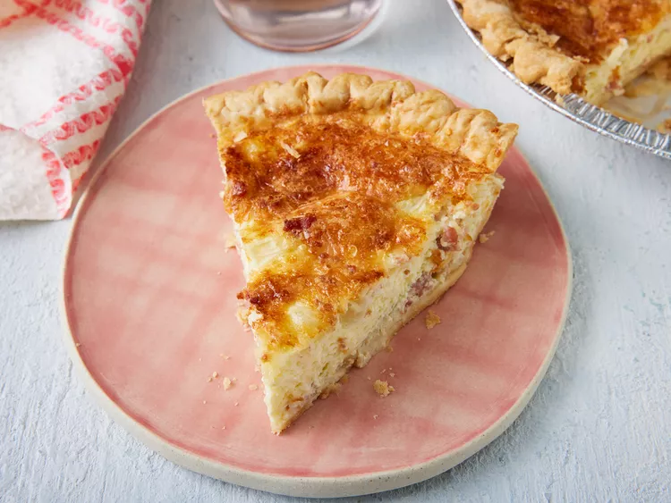

Bacon and Cheese Quiche

Description
This is an easy, delicious quiche that takes no time to prepare using a frozen deep-dish pie crust, bacon bits,
cream, and two types of cheese. I have made this for numerous brunches and everyone raves about it!
It doesn't get much better than this easy, cheesy bacon quiche. Whether you're looking for a satisfying breakfast
or a fun idea for breakfast-for-dinner, this bacon quiche recipe will satisfy everyone at your table.
Ingredients
1 (9 inch) deep dish frozen pie crust
1 (3 ounce) can bacon bits
½ cup chopped onion
5 ounces shredded Swiss cheese
3 ounces grated Parmesan cheese
4 eggs, lightly beaten
1 cup half-and-half cream
Steps
- Preheat the oven to 400 degrees F (200 degrees C).
- Place unthawed pie crust in a pie pan on a baking sheet. Mix bacon, chopped onion, and both cheeses in a
medium bowl. Pour this mixture into the crust.
- Mix eggs and half and half in a bowl until blended; pour the egg mixture over the cheese mixture.
- Bake in preheated oven for 15 minutes. Reduce heat to 350 degrees F (175 degrees C) and bake until the top
of the quiche begins to turn golden brown, an additional 35 minutes.